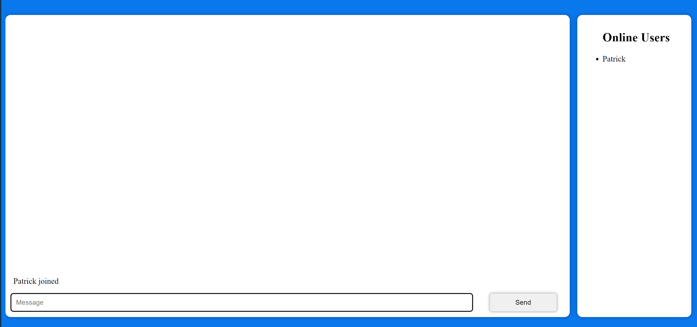
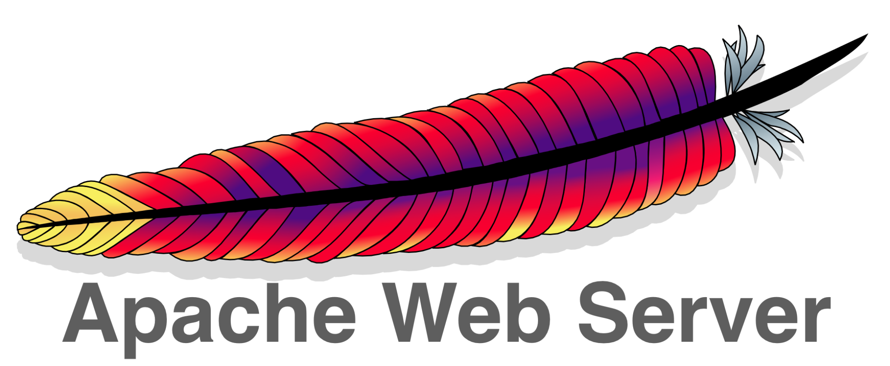

www.patchat.ca
PatChat is a web app that I made for fun. The websitePatChat.ca is a chatroom, that I host on my unbuntu server on my Raspberry Pi 4. I used Express and Socket.io to make the chatroom. I used pm2 to run the server in the background. I used apache and a vitural host point to the desired port. Apache all handles my SSL certificate. I used Certbot to get the SSL certificate. I also used port forwarding to point all traffic on my ip address ports 80 and 443 to my Raspberry Pi and Apache does the rest.
Creating the chat room seemed to go well after I found a video breaking it down to its simplest components. Another layer of complexity was added when I allowed Apache to handle my ssl certificates as opposed to setting up the express server as an HTTPS server to begin with. I was able to get the site to work properly allowing Apache to handle the SSL certificatesalthough this method does generate one console error on the client side due to a connection failing at first. If you run it as an http server the error is gone. Either way this does not affect the functionality of the chat room and I am proud of the product I've produced.
ALOA(A Little Offensive Appliance)

P4wnP1 A.L.O.A. by MaMe82 is a framework which turns a Rapsberry Pi Zero W into a flexible, low-cost platform for pentesting, red teaming and physical engagements ... or into "A Little Offensive Appliance". It's main super power is the ability To mimic an HID device AKA inject keystrokes and mouse movements into a computer. Also it is able to emulate a mass storage device. When used with the HID injection you are able to launch any number of exes you have preloaded onto the device. I can not overstate the power of HID injections, After opening a terminal on a computer you can do anything you want.
This project has made me aware of so many vulnerabilities most
personal computers. I'm very interested in cyber security and would
love to use this device to further my education on the subject. At the
very least it is a fun educational toy/tool. At about $40 to get
started, I found it an affordable way to learn about vulnerabilities
in personal computers.
If you are instrested follow this link to the GitHub
repository
page.
If you are intrested in buying a Raspberry-Pi 0W please use this
Link.
If you are
intrested in buying a Raspberry-Pi 0W USB board please use this
Link.
If you would
like to buy an sd card for your Raspberry-Pi please use this
Link.
Unbutu Server as an OS for a Raspberry Pi 4
This allows me to have many directories with different types of frameworks and servers such as Apache, Express, Python or Rubyy. I also get to experince Linux as an os well hosting any number of servers or services. It will also help me learn the command line and how to use it. I am looking forward to learning more about Linux and web servers.
Unbuntu server is very powerful and a great addition to any home
network especially if you want to self host many web services. I am
very impressed a Raspberry Pi 4 can run Unbuntu server and host
Multiple websites and applications at the same time.
If you are intressted in setting up Unbutu Server on a
Raspberry Pi follow this link to a guidepage.
If you are intrested in buying a Raspberry-Pi 4 please use this
Link.
If you would
like to buy a case for your Raspberry-Pi 4 please use this
Link.
If you would
like to buy an sd card for your Raspberry-Pi 4 please use this
Link.
Kali Linux on a Rassberry Pi 4

Kali Linux is a Debian based Linux distribution that is used for penetration testing. It is maintained and funded by Offensive Security Ltd. Alot of the features have been patched, and security features have been added to prevent some of the attacks. There is alot that does work and is super neat. I have plently more to go through and learn. One thing I have learned is have strong passwords and use a password manager so you can have even stronger passwords. I have also learned that there are many vulnerabilities in personal computers and something as simple as clicking on a link could open your computer or phone up to an attacker.
Im glad there is a low cost platform like the Raspberry Pi 4 to Kali
and other Linux OS's. After my experince with Kalia I may even take
the post deploma program at Bow Valley College after I finish my
current program software development.
If you are intressted in setting up Kali Linux on a
Raspberry Pi follow this link to a guidepage.
You can download Kali Linux from this
page.
If you are intrested in buying a Raspberry-Pi 4 please use this
Link.
If you would
like to buy a case for your Raspberry-Pi 4 please use this
Link.
If you would
like to buy an sd card for your Raspberry-Pi 4 please use this
Link.
Apache 2 Web Server
This website is hosted on Apache on a Raspberry Pi 4 right now. This was a fun project and quick to set up. What I like about Apache is that it is able to act as a reverse proxy. Basicly you set up a file called a vitural host and point it to the desired port. Then you set up port forwarding on your router to point to the ip address. Using this method not only can I serve websites from cirtin directories but I can also serve different websites from different ports. Allowing me to host as many different types of servers, but also frameworks. Apache is such a powerful tool when it comes to web hosting.I am looking forward to learning more about Apache and web servers.
Express Server

Express is a web framework for Node.js. It is used for designing and building web applications quickly and easily. It is a flexible Node.js web application framework that provides a robust set of features for web and mobile applications. So far I was able to set up a downloads and uploads server which I am ables to download files from and also able to upload files from. I have also used Sock.io with an Express Server to beale to share content with everyone connected. From what I can tell the possibilities are endless with Express. I'm glad I was able to get some experince with Express in the classroom so I was able to ask many questions.